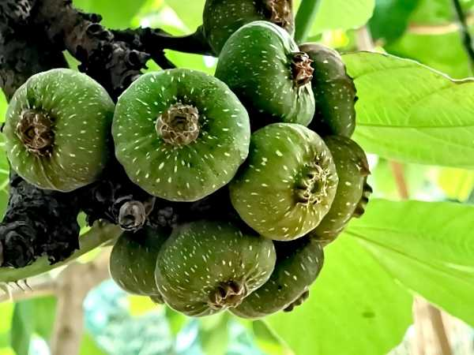

Ficus auriculata
Common Names: Elephant Ear Fig, Timla, Roxburgh Fig, Giant Himalayan Fig
Local Name: Timla (Hindi/Nepali), Atthi (Tamil), Dumur (Bengali)
Family: Moraceae
Origin: Himalayan foothills, India, Nepal, Southeast Asia
Plant Type: Perennial semi-deciduous to evergreen tree
Variety: Species type; large-leaved fig with edible cauliflorous fruits
Average Lifespan: 50–100+ years
| Growth Habit | Medium to large spreading tree; cauliflorous (fruits on trunk and main branches) |
| Plant Size | 5–15 meters tall; canopy spread 6–10 meters |
| Leaves | Very large, broadly ovate to cordate; 20–45 cm long; rough texture; resembles elephant ear; bright green |
| Flowers | Tiny flowers enclosed within the syconium (fig); not visible externally |
| Flower Characteristics | Cauliflorous; figs borne directly on trunk and main branches; pollinated by specific fig wasps |
| Fruit | Large, pear-shaped to globose syconium; 4–8 cm diameter; borne in clusters on trunk and branches |
| Fruit Color | Green turning reddish-purple to dark red when ripe; pink-red flesh inside |
| Seed Characteristics | Numerous tiny seeds within the syconium; very small, pale |
| Root System | Extensive, aggressive root system; surface and deep roots; drought-tolerant |
| Climate | Tropical to warm subtropical; tolerates cooler temperatures than common fig |
| Temperature Range | 10–35°C; tolerates mild frost; more cold-hardy than Ficus carica |
| Rainfall Requirement | 1000–2500 mm; prefers moist conditions; drought-tolerant once established |
| Soil Type | Well-drained loam to clay loam; tolerates a wide range of soils |
| Soil pH Preference | 5.5–7.5 |
| Sun Requirement | Full sun to partial shade |
| Spacing | 6–10 meters between trees; large canopy needs space |
| Irrigation Method | Basin or drip irrigation; regular watering during dry season |
| Water Requirement | Moderate to high; drought-tolerant once established |
| Can it Grow in Pots? | Not recommended; large tree requires open ground |
| Fertilizer Schedule | 2–3 times per year; pre-fruiting and post-harvest |
| Recommended Organic Fertilizers | FYM, vermicompost, neem cake, wood ash |
| Pesticide Frequency | Minimal; generally pest-resistant |
| Recommended Organic Pesticides | Neem oil for scale and mealybugs; fruit bagging for fruit fly |
| Mulching Practice | Heavy organic mulch around base to retain moisture |
| Training System | Allow natural form; minimal training needed |
| Pruning Time | After fruiting season; remove dead and crossing branches |
| How to Prune | Light pruning to maintain shape; avoid heavy pruning (reduces fruiting) |
| Common Pests | Fig fruit fly, scale insects, mealybugs, birds (fruit damage) |
| Common Diseases | Fruit rot in wet conditions; leaf spot; generally disease-resistant |
| Disease Prevention & Remedies | Good air circulation; harvest ripe fruits promptly; fruit bagging |
| Flowering Months | Flowers enclosed in syconium; fruiting occurs year-round with peak in summer and winter |
| Fruiting Season | Multiple crops per year; main crop March–June; secondary crop October–December |
| Days to Harvest | 60–90 days from fig initiation to ripeness |
| Harvest Indicators | Fruit turns reddish-purple; soft to touch; slight cracking at eye; sweet aroma |
| Average Yield per Plant | 50–200 kg per tree (mature); very productive |
| Pollination Type | Pollinated by specific fig wasps (Ceratosolen species) |
| Pollination Notes | Requires specific fig wasp for pollination; parthenocarpic fruits also develop without pollination |
| Pollination Details | Fig wasp (Ceratosolen) enters syconium to pollinate; parthenocarpic fruits also common |
| Propagation by Seeds | Seeds germinate readily; slow to fruit (5–7 years) |
| Propagation by Cuttings | Hardwood cuttings root well; preferred method; fruits in 2–3 years |
| Propagation by Grafting | Air layering also effective; grafting on Ficus rootstock possible |
| Water Usage | Moderate; drought-tolerant once established |
| Soil Conservation Practices | Large canopy provides shade and reduces soil erosion; leaf litter improves soil |
| Organic Practices Used | Minimal inputs; naturally robust tree |
| Companion Plants | Shade-tolerant plants under canopy; ginger, turmeric as understory crops |
| Biodiversity Benefits | Keystone species; fruits feed birds, bats, and mammals; supports fig wasp ecosystem |
| Commercial Production Regions | India (Himalayan foothills, Northeast), Nepal, Thailand, Vietnam |
| Market Uses | Fresh fruit, local markets; vegetable use (unripe figs in curries) |
| Processing Uses | Jam, pickle, dried fruit; unripe figs used as vegetable in curries |
| Market Value (Approx.) | ₹40–100 per kg; niche market; growing interest in exotic figs |
| Symbolism | Sacred tree in Hindu and Buddhist traditions; associated with fertility and abundance |
| Traditional Uses | Unripe figs used as vegetable; ripe figs eaten fresh; bark and leaves used in traditional medicine for skin conditions and diabetes |
| Calories | 74 kcal per 100g (fresh) |
| Dietary Fiber | 2.9 g per 100g |
| Vitamin C | 2 mg per 100g |
| Potassium | 232 mg per 100g |
| Antioxidants | Polyphenols, flavonoids, anthocyanins in skin |
| Other Key Nutrients | Calcium, iron, magnesium, vitamin B6 |
| Digestive Health | High fiber content aids digestion; used in traditional medicine for constipation |
| Anti-inflammatory Properties | Leaf and bark extracts show anti-inflammatory activity in traditional use |
Disclaimer: Information provided is for educational purposes only and not a substitute for medical advice.
Add your field observations here.